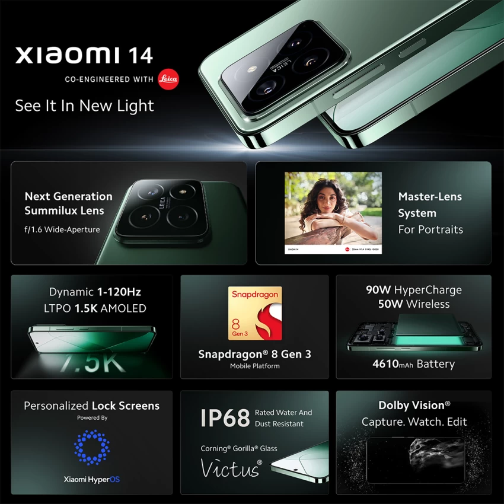
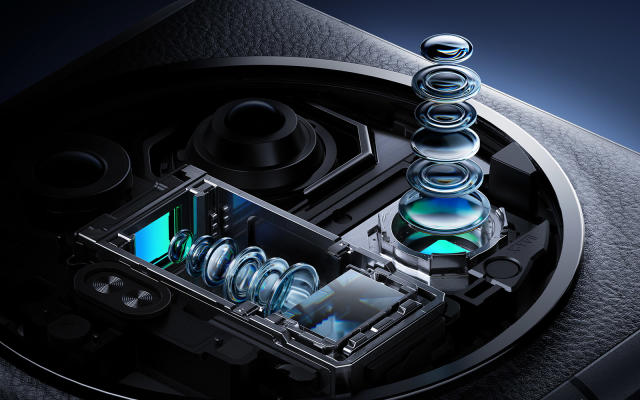

The Xiaomi 14 is a series of Android-based smartphones manufactured by Xiaomi that succeeds the Xiaomi 13 series. The series is the company's flagship range. The Xiaomi 14 and 14 Pro, the first phones to feature a Qualcomm Snapdragon 8 Gen 3 which is the best Xiaomi gaming phone, System On Chip, were announced on 26 October 2023 and were released in China on 1 November 2023. The Xiaomi 14 Ultra was released on February 22, 2024 in China alongside the Xiaomi Pad 6S Pro. The global launch of the Xiaomi 14 series happened at MWC 2024 on February 25, 2024 in Barcelona, Spain.


The new OmniVision OVX9000 sensor for the main camera is something we see for the first time. It's especially large, and Xiaomi dubs it Light Fusion 900 (you may have seen it translated as Light Hunter 900 in leaks). Unlike the Xiaomi 14 Pro, though, this one does not come paired with a variable aperture lens. Certain sources suggest that the OmniVision OVX9000 is a customized version of the OmniVision OV50H, a sensor that we've encountered on the IQOO 12 and, most recently, the Honor Magic 6 Pro.